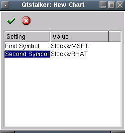

Create and update ratio charts. A ratio chart is the value of the first symbol divided by the value of the second symbol. To create a new ratio, press the "New" button, otherwise an update will update all the ratio charts to their most current values.
Pressing the new button will bring up the following dialog.

Here the ratio will calculate the first symbol "MSFT" divided by the second symbol "RHAT". The chart will reflect the ratio between the two symbols.